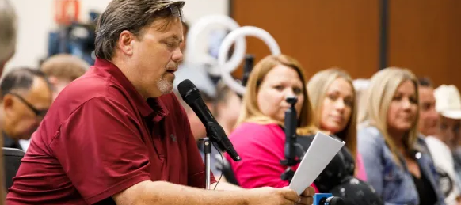
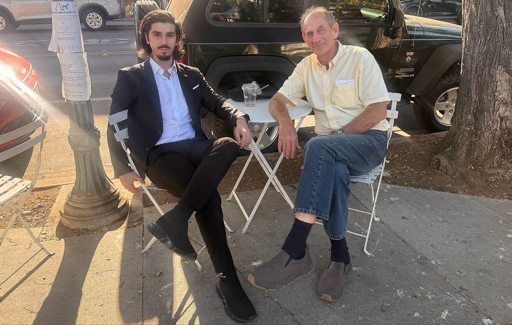
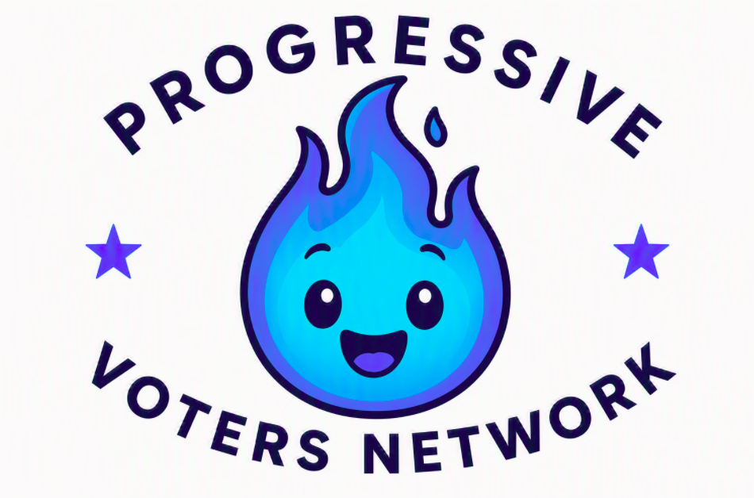
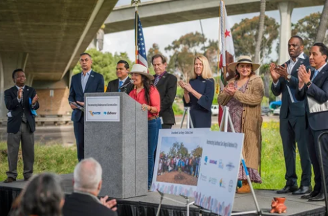
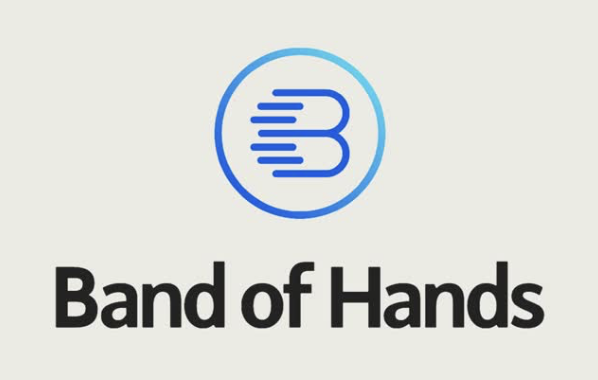
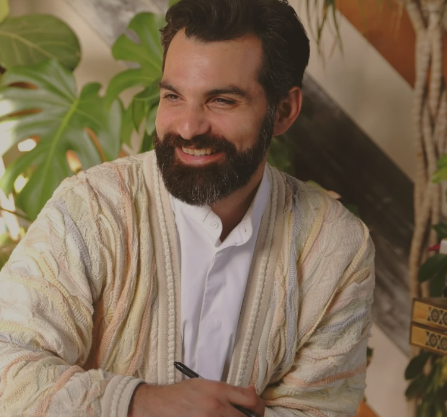

— Endorsements
Trusted voices, standing with Bayati
Local leaders, educators, and community organizations who believe El Cajon deserves better — and are standing with this campaign to make it happen.

"Osama understands that education is the foundation of our community. His commitment to youth mentorship and career pathways will give our students the opportunities they deserve."

"Bayati's campaign represents exactly what local government should be: accountable, transparent, and focused on results. His policy agenda shows the kind of clear, measurable thinking that El Cajon needs."

"We endorse candidates who are fighting for meaningful change in their communities. Osama Bayati's platform on term limits, small business support, and youth investment aligns with our values."

"Osama has shown up for our community — not just during campaign season, but year after year. His vision for health equity, environmental justice, and sustainable development is exactly what El Cajon needs."

An organization that delivers government‑funded programs, reduces inefficiencies, and enhances profitability for small businesses.

Doctorate in Education Leadership from Harvard University. CNN Hero Award recipient. National and international recognition for empowering young people and strengthening institutions.
If you're a community leader, educator, or organization who wants to stand with Bayati, reach out to the campaign.
Contact the campaign →Fuel the movement
Help us turn the page on 25 years of the same voice. Every donation, every volunteer hour, every conversation matters.